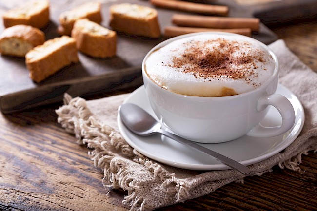

Kiedy powstała?
Kawa była z nami już od tysięcy lat, jednakże kawa jako napój zaczęła być stosowana dopiero około XVIII wieku w Jemenie.
1. Legendy o Kawie
Istnieje wiele legend o kawie i o tym jak odkryto jej pobudzające działanie. Jedna z najstarszych opowiada o młodym pasterzu z Etiopii, który około 850 roku naszej ery, zauważył, że jego kozy po zjedzeniu pewnej odmiany jagód są szczególnie ożywione. Następnie mnisi chcieli działanie tych jagód wykorzystać, jednakże byli bardzo rozczarowani ich gorzkim smakiem, dlatego wrzucili je do ogniska uznając je za nieprzydatne. Po kilku minutach do ich nozdrzy dotarł niespotykany wcześniej, zachwycający aromat. Zaciekawieni cudownym zapachem postanowili przygotować wywar z palonych ziaren kawy. Później napój ten uznali za dar Niebios, gdyż nie pozwalał im zasnąć przez cała noc.
2. Odkrycie Kawy
Kultura picia kawy sięga XI wieku. Wtedy właśnie kawę po raz pierwszy przywieziono do Arabii z miejsca jej pochodzenia - Etiopii. Persowie szybko zakochali się w pobudzających właściwościach "nowego wina Islamu", ponieważ prawdziwe wino było surowo zakazane dla Muzułmanów. Słowo "kawa" pochodzi od staroarabskiego słowa "qahwah". W drugiej połowie XV w., kawa rozprzestrzeniła się z Królestwa Arabii przez Mekkę i Medynę i w 1510 r. dotarła do Kairu. W pierwszej połowie XVI w. Imperium Osmańskie osiągnęło szczyt swojego rozwoju. Kawa zaczęła odgrywać coraz to większą rolę w Arabii, Azji Mniejszej, Syrii, Egipcie i południowo-wschodniej Europie. Pierwsze kawiarnie otworzono w Damaszku i Aleppo w 1530 i 1532 roku.
3. Kawa podbija Europę
W 1615 roku weneccy kupcy przywieźli pierwsze worki z kawą do zachodniej Europy. Wspaniały aromat i pobudzające właściwości sprawiły, że kawa szybko stała się popularnym napojem, a kawiarnie zaczęły powstawać w całej Europie. Burżuazja, patrząca na wszystko przez pryzmat interesów, wkrótce śpiewała pieśni wychwalające otrzeźwiające właściwości kawy, która przemieniała pijaków w wartościowych pracowników. Duńscy i angielscy żeglarze przewieźli roślinę kawowca do swoich kolonii na całym świecie. Kiedy Turcy zostali odparci pod Wiedniem w 1683 roku, pozostawili po sobie 500 worków kawy. Przedsiębiorczy polski biznesmen wykorzystał je, aby otworzyć pierwszą wiedeńską kawiarnię. Rozprzestrzenianiu się napoju towarzyszył olbrzymi wzrost hodowli krzewów kawowca. Już pod koniec XVII w. podjęto udane próby hodowli tych krzewów w szklarniach. Jedna z takich roślin została przesłana w podarunku Ludwikowi XIV do Paryża w 1714 r. Od tego krzewu, jak się powszechnie uważa, pochodzą miliony innych krzewów kawowca.
4. Kawa w XX Wieku
 We wczesnych latach XX w. Brazylia była największym producentem kawy. Dzisiaj prawie cała produkcja kawy skupiona jest w Ameryce Środkowej, Brazylii i tropikalnych regionach Ameryki Południowej. Światowa produkcja kawy wynosi około 150 milionów worków rocznie, przy czym Brazylia zajmuje pierwsze miejsce, produkując ponad 1/3 tej ilości. Kawy nie pali się już w domu, ponieważ teraz sprzedawana jest jako gotowy produkt. W 1901 r. Japończyk dr Sartori Kato przedstawił pierwszą kawę rozpuszczalną. W 1938 r. firma Nestlé położyła podwaliny pod komercyjną sprzedaż kawy rozpuszczalnej. Skalę spożycia kawy najlepiej odzwierciedla światowy trend konsumpcji nieprzetworzonej kawy w przeciągu ostatnich 250 lat. Rok 1750: 600.000 worków, rok 1850: 4 miliony worków, rok 1950: 36 milionów worków, rok 1995: 94 miliony worków, rok 2000: 103 miliony worków. Popyt na kawę uczynił z niej drugi najważniejszy, po produktach naftowych, przedmiot handlu. Trendowi temu towarzyszyły etapy nadprodukcji, spalania nadwyżek, załamania cen, światowego kryzysu ekonomicznego, spadku konsumpcji w czasie obu wojen światowych oraz podpisania międzynarodowych porozumień w sprawie kawy, mających na celu ustabilizowanie cen. Po drugiej wojnie światowej w Niemczech kawa stała się symbolem gospodarczej odbudowy i cudu gospodarczego. Picie kawy stało się synonimem zamożności.